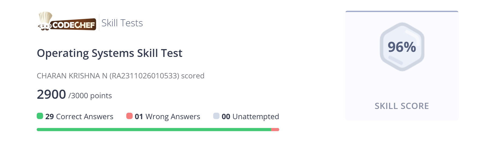

Student Portfolio
CHARAN KRISHNA
Photo
Register Number: RA2311026010533
Mail ID: cn6159@srmist.edu.in
Department: CINTEL
Year / Sem/ Section: 2ND/3RD/AJ-1
Subject Title: 21CSC201J Data Structures and Algorithms
Handled By: Dr.Sudha Rajesh
GitHub: https://github.com/charankrishna-n
Portfolio Website (if any): NONE
ELab Completion Status
Lab Experiment Completion Status
SOLVED REAL WORLD PROBLEM / CONCEPTUAL TASK
Real-World Problem: Overbooking and seat allocation inefficiency: In traditional cinema halls, people sometimes face issues like overbooking or poorly managed seat allocations, where customers end up with suboptimal seating arrangements or even lose out on their booking due to mismanagement.
Conceptual Task: Build a dynamic seat allocation and real-time ticket booking system: Develop a system where customers can view the available seats in real-time, select their preferred seats, and complete the booking process with confidence. The system should also automatically update seat availability when a ticket is booked, preventing overbooking and ensuring accurate seat allocation.
CERTIFICATIONS (Coursera/edX/etc.)
Include any online courses, workshops, or certifications related to Data Structures and algorithms, problem-solving

NPTEL/HOTS QUESTIONS SOLUTION
Question: Design a traffic management system using AI. Discuss how it would prioritize vehicles based on different scenarios like rush hour, accidents, or road closures.
Solution: A traffic management system using AI can optimize traffic flow by adjusting traffic signals based on real-time data. Here’s how it would work for different scenarios: Rush Hour: AI adjusts traffic light timings dynamically to prioritize busy roads, reducing congestion by predicting traffic volumes and rerouting traffic where necessary. Accidents/Road Closures: The system reroutes traffic away from affected areas using real-time data from GPS and sensors, adjusting signals to prioritize alternative routes. Emergency Vehicle Priority: The system detects emergency vehicles (ambulances, fire trucks) through GPS or sensors and adjusts signals to give them priority. Night-time Traffic: AI reduces unnecessary signal changes and adjusts traffic flow based on lower traffic volume, prioritizing routes to residential areas.
CODING COMPETITIONS
Any notable rankings or achievements in coding contests (e.g., LeetCode, CodeChef, HackerRank, Codeforces, ICPC)
Signature of the Student